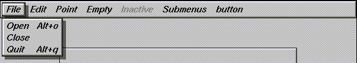

Fl_Menu_ | +----Fl_Menu_Bar
#include <FL/Fl_Menu_Bar.H>
The items on the bar and the menus they bring up are defined by a single Fl_Menu_Item array. Because a Fl_Menu_Item array defines a hierarchy, the top level menu defines the items in the menubar, while the submenus define the pull-down menus. Sub-sub menus and lower pop up to the right of the submenus.

If there is an item in the top menu that is not a title of a submenu, then it acts like a "button" in the menubar. Clicking on it will pick it.
When the user picks an item off the menu, the item's callback is done with the menubar as the Fl_Widget* argument. If the item does not have a callback the menubar's callback is done instead.
Submenus will also pop up in response to shortcuts indicated by putting a '&' character in the name field of the menu item. If you put a '&' character in a top-level "button" then the shortcut picks it. The '&' character in submenus is ignored until the menu is popped up.
Typing the shortcut() of any of the menu items will cause callbacks exactly the same as when you pick the item with the mouse.
The constructor sets menu() to NULL. See Fl_Menu_ for the methods to set or change the menu.
labelsize(), labelfont(), and labelcolor() are used to control how the menubar items are drawn. They are initialized from the Fl_Menu static variables, but you can change them if desired.
label() is ignored unless you change align() to put it outside the menubar.